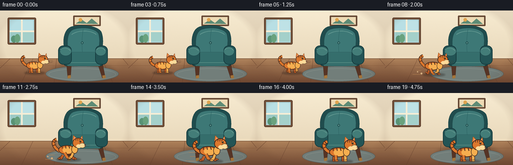
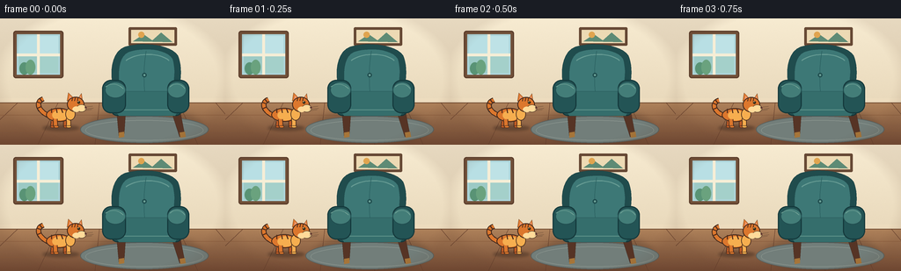

CODING AGENTS AS PIXEL WORLD MODELS
traex/GPT-5.6-Sol · dynamic_spatial_relationship_0006
点击播放 · 原生 RGB 像素
逐轮保存的候选
回放视频、检查图与代码变化。
每份候选均可单独播放。实际图片检查记录在下方工具轨迹中。
候选 01播放与检查图
点击播放 · 原生 RGB 像素


展开代码变化
--- 上一保存版本
+++ 本次保存版本
@@ -0,0 +1,254 @@
+from pathlib import Path
+import math
+import numpy as np
+from PIL import Image, ImageDraw, ImageFilter
+import artifact_io
+
+# Supersampled procedural illustration. All coordinates below are in the 256x144
+# design space and are scaled only while drawing.
+W, H, N, S = 256, 144, 20, 4
+rng = np.random.default_rng(41)
+
+def sc(v):
+ return int(round(v * S))
+
+def box(b):
+ return tuple(sc(v) for v in b)
+
+def pts(p):
+ return [(sc(x), sc(y)) for x, y in p]
+
+def bezier(p0, p1, p2, p3, n=30):
+ out = []
+ for t in np.linspace(0, 1, n):
+ q = 1-t
+ out.append((q**3*p0[0]+3*q*q*t*p1[0]+3*q*t*t*p2[0]+t**3*p3[0],
+ q**3*p0[1]+3*q*q*t*p1[1]+3*q*t*t*p2[1]+t**3*p3[1]))
+ return out
+
+def smoothstep(x):
+ x = min(1.0, max(0.0, x))
+ return x*x*(3-2*x)
+
+def background(frame_idx):
+ # Warm wall and wooden floor gradients, with very mild fixed paper texture.
+ yy = np.linspace(0, 1, H*S)[:, None, None]
+ top = np.array([247, 235, 209], dtype=float)[None,None,:]
+ bot = np.array([226, 208, 177], dtype=float)[None,None,:]
+ wall = top*(1-yy) + bot*yy
+ arr = np.tile(wall, (1, W*S, 1))
+ yfloor = sc(94)
+ floor_y = np.linspace(0,1,H*S-yfloor)[:,None,None]
+ ftop = np.array([177, 132, 92.],dtype=float)[None,None,:]
+ fbot = np.array([113, 73, 51.],dtype=float)[None,None,:]
+ arr[yfloor:] = np.tile(ftop*(1-floor_y)+fbot*floor_y,(1,W*S,1))
+ noise = rng.normal(0, 1.0, (H*S, W*S, 1))
+ arr = np.clip(arr + noise, 0,255).astype(np.uint8)
+ im = Image.fromarray(arr, 'RGB')
+ d = ImageDraw.Draw(im)
+ # Window at left, softly lit. It anchors the room without competing with actors.
+ d.rounded_rectangle(box((15,14,72,68)), radius=sc(3), fill=(113,80,57), outline=(91,61,43), width=sc(1.2))
+ d.rectangle(box((19,18,68,64)), fill=(173,213,218))
+ # Sky panes
+ d.rectangle(box((21,20,42,40)), fill=(184,223,228))
+ d.rectangle(box((45,20,66,40)), fill=(190,226,230))
+ d.rectangle(box((21,43,42,62)), fill=(156,202,197))
+ d.rectangle(box((45,43,66,62)), fill=(164,208,202))
+ d.rectangle(box((42,18,45,64)), fill=(246,238,214))
+ d.rectangle(box((19,40,68,43)), fill=(246,238,214))
+ # Suggest distant leaves outside.
+ d.ellipse(box((22,50,33,64)), fill=(89,147,117)); d.ellipse(box((29,47,40,64)), fill=(106,162,126))
+ # Baseboard and floorboard perspective.
+ d.rectangle(box((0,91,256,96)), fill=(237,220,190))
+ d.line(pts([(0,96),(256,96)]), fill=(119,82,56), width=sc(1))
+ for x0, x1 in [(-30,20),(43,66),(108,113),(170,160),(225,203),(285,245)]:
+ d.line(pts([(x0,144),(x1,96)]), fill=(98,61,43), width=sc(.55))
+ for y in (110,128):
+ d.line(pts([(0,y),(256,y)]), fill=(137,91,60), width=sc(.55))
+ # Framed picture above chair.
+ d.rounded_rectangle(box((146,10,201,31)), radius=sc(1.5), fill=(102,72,52))
+ d.rectangle(box((149,13,198,28)), fill=(237,218,180))
+ d.polygon(pts([(151,26),(163,18),(173,25),(183,16),(196,27)]), fill=(94,139,117))
+ d.ellipse(box((157,15,164,22)), fill=(224,164,79))
+ return im
+
+def ellipse_layer(im, rect, fill, blur):
+ layer = Image.new('RGBA', im.size, (0,0,0,0)); dl = ImageDraw.Draw(layer)
+ dl.ellipse(box(rect), fill=fill)
+ layer = layer.filter(ImageFilter.GaussianBlur(sc(blur)))
+ im.paste(layer, (0,0), layer)
+
+def draw_chair(im):
+ d = ImageDraw.Draw(im)
+ # Ground/contact shadow and rug.
+ ellipse_layer(im, (102,105,229,141), (48,34,29,68), 4)
+ d = ImageDraw.Draw(im)
+ d.ellipse(box((91,111,237,142)), fill=(114,126,122), outline=(90,96,93), width=sc(1))
+ d.ellipse(box((97,116,231,139)), outline=(145,155,148), width=sc(.6))
+ # Back legs first.
+ for poly in [[(132,101),(143,102),(141,133),(135,135)],[(193,101),(204,102),(210,133),(204,135)]]:
+ d.polygon(pts(poly), fill=(86,52,37), outline=(60,39,31))
+ # Dark outer chair back, a custom rounded silhouette.
+ back = bezier((130,89),(124,66),(124,34),(147,31),13)
+ back += bezier((147,31),(164,27),(194,30),(202,42),13)[1:]
+ back += bezier((202,42),(208,56),(205,75),(201,91),13)[1:]
+ back += [(194,101),(137,101)]
+ d.polygon(pts(back), fill=(32,76,77), outline=(21,54,57))
+ # Upholstered inner back.
+ inner = bezier((137,87),(133,61),(134,40),(150,37),12)
+ inner += bezier((150,37),(166,33),(189,35),(196,46),12)[1:]
+ inner += bezier((196,46),(200,58),(198,75),(194,88),12)[1:]
+ inner += [(188,94),(144,94)]
+ d.polygon(pts(inner), fill=(61,120,118), outline=(39,88,88))
+ # Soft back highlight and seams.
+ d.line(pts(bezier((143,48),(154,39),(181,38),(192,48),18)), fill=(102,155,147), width=sc(1.2))
+ d.line(pts(bezier((166,37),(163,55),(163,72),(165,91),20)), fill=(45,99,99), width=sc(.8))
+ d.ellipse(box((161.5,62,166.5,67)), fill=(39,91,91), outline=(29,71,73), width=sc(.7))
+ d.ellipse(box((163,63.5,165,65.5)), fill=(115,166,155))
+ # Seat, cushion and arms.
+ d.rounded_rectangle(box((126,83,207,111)), radius=sc(7), fill=(34,80,81), outline=(20,55,58), width=sc(1.3))
+ d.polygon(pts([(132,83),(199,83),(205,101),(199,111),(135,111),(127,101)]), fill=(53,110,108), outline=(29,72,74))
+ d.line(pts([(137,104),(197,104)]), fill=(93,145,136), width=sc(1))
+ # Side arms overlap cushion.
+ d.rounded_rectangle(box((116,70,143,108)), radius=sc(10), fill=(35,84,85), outline=(20,56,59), width=sc(1.3))
+ d.rounded_rectangle(box((190,70,215,108)), radius=sc(10), fill=(35,84,85), outline=(20,56,59), width=sc(1.3))
+ d.ellipse(box((119,72,143,91)), fill=(67,125,120), outline=(33,78,80), width=sc(1))
+ d.ellipse(box((190,72,212,91)), fill=(67,125,120), outline=(33,78,80), width=sc(1))
+ d.line(pts(bezier((120,78),(126,73),(134,74),(140,80),12)), fill=(113,162,150), width=sc(.8))
+ d.line(pts(bezier((193,78),(198,73),(206,74),(210,80),12)), fill=(113,162,150), width=sc(.8))
+ # tiny brass foot caps
+ d.polygon(pts([(135,130),(141,129),(141,135),(135,136)]), fill=(166,117,57))
+ d.polygon(pts([(204,130),(210,129),(211,135),(205,136)]), fill=(166,117,57))
+
+def cat_line(d, points, fill, width):
+ d.line(pts(points), fill=fill, width=max(1,sc(width)), joint='curve')
+
+def draw_cat(im, x, ground_y, scale, phase, moving, settle, frame_idx):
+ d = ImageDraw.Draw(im)
+ def tr(p):
+ px,py=p; return (x+px*scale, ground_y+py*scale)
+ def tpts(pp): return pts([tr(p) for p in pp])
+ def tbox(b):
+ x0,y0,x1,y1=b
+ return box((x+x0*scale, ground_y+y0*scale, x+x1*scale, ground_y+y1*scale))
+ dark=(83,45,28); outline=(64,39,27); orange=(220,119,45); light=(246,174,79); cream=(255,218,153)
+ # Soft moving contact shadow.
+ ellipse_layer(im, (x-25*scale, ground_y-3*scale, x+28*scale, ground_y+5*scale), (35,24,20,90), 1.5)
+ d=ImageDraw.Draw(im)
+ # Running speed streaks are restrained and appear only in mid-run.
+ if moving and 7 <= frame_idx <= 14:
+ speed = min(1, abs(math.sin(phase)))
+ for j,(dy,ll) in enumerate([(-17,16),(-9,11),(0,18)]):
+ xx=x-26*scale-j*2
+ d.line(pts([(xx-ll*scale,ground_y+dy*scale),(xx,ground_y+dy*scale)]), fill=(176,127,83), width=sc(.8))
+ # Tail behind the torso: thick outlined cubic curve.
+ sway=math.sin(phase*.72)*3 if moving else math.sin(frame_idx*.45)*2
+ curve=bezier(tr((-17,-17)),tr((-32,-24+sway)),tr((-35,-38+sway)),tr((-24,-41+sway)),24)
+ d.line(pts(curve), fill=outline, width=sc(7.5*scale), joint='curve')
+ d.line(pts(curve), fill=orange, width=sc(5.2*scale), joint='curve')
+ # Tail bands.
+ for tt in (.46,.70,.90):
+ idx=min(22,int(tt*23)); p0=curve[max(0,idx-1)]; p1=curve[min(23,idx+1)]
+ vx=p1[0]-p0[0]; vy=p1[1]-p0[1]; L=max(1,math.hypot(vx,vy)); nx=-vy/L*2.6*scale; ny=vx/L*2.6*scale
+ d.line(pts([(curve[idx][0]-nx,curve[idx][1]-ny),(curve[idx][0]+nx,curve[idx][1]+ny)]), fill=dark, width=sc(1.5*scale))
+ # Gait: opposite paws reach in alternate directions.
+ if moving:
+ swing=math.sin(phase)
+ lift1=max(0,math.cos(phase))*5
+ lift2=max(0,-math.cos(phase))*5
+ else:
+ swing=0.0; lift1=lift2=0.0
+ # Far legs, muted.
+ far=(190,92,39)
+ legs=[((-10,-9),(-11-8*swing,-1-lift1),far,4.7),
+ ((8,-9),(8+8*swing,-1-lift2),far,4.7)]
+ for hip,foot,col,wid in legs:
+ mid=((hip[0]+foot[0])*.5, -2-min(2,(lift1+lift2)*.15))
+ pp=[tr(hip),tr(mid),tr(foot)]
+ d.line(pts(pp),fill=outline,width=sc((wid+2)*scale),joint='curve')
+ d.line(pts(pp),fill=col,width=sc(wid*scale),joint='curve')
+ d.ellipse(box((pp[-1][0]-3*scale,pp[-1][1]-1.5*scale,pp[-1][0]+4*scale,pp[-1][1]+2*scale)),fill=col,outline=outline,width=sc(.7*scale))
+ bob=(-abs(math.sin(phase))*2.2 if moving else math.sin(frame_idx*.45)*.35)
+ # Torso.
+ d.ellipse(tbox((-20,-28+bob,17,-8+bob)), fill=orange, outline=outline, width=sc(1.4*scale))
+ d.ellipse(tbox((-11,-25+bob,12,-10+bob)), fill=light)
+ # Tabby side marks.
+ for xx,ang in [(-12,0),(-5,1),(2,2)]:
+ d.line(tpts([(xx,-27+bob),(xx+ang,-21+bob)]),fill=dark,width=sc(1.7*scale))
+ # Near legs in brighter orange.
+ near=[((-7,-12+bob),(-6+9*swing,-1-lift2),orange,5.0),
+ ((12,-13+bob),(12-9*swing,-1-lift1),light,5.0)]
+ for hip,foot,col,wid in near:
+ knee=((hip[0]+foot[0])*.52, -5+bob*.2)
+ pp=[tr(hip),tr(knee),tr(foot)]
+ d.line(pts(pp),fill=outline,width=sc((wid+2)*scale),joint='curve')
+ d.line(pts(pp),fill=col,width=sc(wid*scale),joint='curve')
+ d.ellipse(box((pp[-1][0]-3*scale,pp[-1][1]-1.5*scale,pp[-1][0]+4.5*scale,pp[-1][1]+2*scale)),fill=col,outline=outline,width=sc(.7*scale))
+ # Neck/chest tuft.
+ d.ellipse(tbox((8,-28+bob,22,-10+bob)),fill=light,outline=outline,width=sc(1.0*scale))
+ # Head is always oriented toward the destination (right).
+ head_y=-31+bob
+ # ears behind head
+ d.polygon(tpts([(10,head_y-7),(12,head_y-19),(21,head_y-10)]),fill=orange,outline=outline)
+ d.polygon(tpts([(25,head_y-9),(31,head_y-18),(33,head_y-5)]),fill=orange,outline=outline)
+ d.polygon(tpts([(13,head_y-9),(14,head_y-15),(19,head_y-10)]),fill=(238,151,111))
+ d.polygon(tpts([(27,head_y-10),(30,head_y-15),(31,head_y-7)]),fill=(238,151,111))
+ d.ellipse(tbox((10,head_y-13,35,head_y+9)),fill=orange,outline=outline,width=sc(1.4*scale))
+ # muzzle / cheek
+ d.ellipse(tbox((24,head_y-2,38,head_y+9)),fill=cream,outline=outline,width=sc(.7*scale))
+ d.ellipse(tbox((18,head_y+1,29,head_y+9)),fill=cream)
+ # forehead stripes
+ for xx in (18,22,26):
+ d.line(tpts([(xx,head_y-12),(xx-1,head_y-7)]),fill=dark,width=sc(1.2*scale))
+ # eye, glint, nose
+ d.ellipse(tbox((25,head_y-7,29,head_y-3)),fill=(54,45,27))
+ d.ellipse(tbox((26,head_y-6.7,27,head_y-5.7)),fill=(247,236,184))
+ d.polygon(tpts([(36,head_y+1),(39,head_y+2.5),(36,head_y+4)]),fill=(93,48,48))
+ # whiskers
+ for dy,ex in [(2,12),(5,13),(7,11)]:
+ d.line(tpts([(35,head_y+dy),(35+ex,head_y+dy-1.5)]),fill=(76,56,42),width=max(1,sc(.45*scale)))
+ # A tiny dust puff emphasizes the quick departure, not the final hold.
+ if moving and 6<=frame_idx<=11:
+ a=(frame_idx-6)
+ for dx,dy,r in [(-24-a*2,-2,2.5),(-33-a*2,-6,1.8)]:
+ d.ellipse(tbox((dx-r,dy-r,dx+r,dy+r)),fill=(213,178,132),outline=(161,119,83),width=sc(.4))
+
+def make_frame(i):
+ im=background(i)
+ draw_chair(im)
+ # 0..4: establish cat to chair's left. 5..15: run on a shallow
+ # diagonal toward camera. 16..19: settle and hold in front, occluding legs.
+ if i <= 4:
+ x=68.0; gy=124.0; scale=.79
+ moving=False; settle=0; phase=0.15
+ elif i <= 15:
+ u=smoothstep((i-4)/11)
+ x=68+(164-68)*u
+ gy=124+(136-124)*u
+ scale=.79+(.99-.79)*u
+ moving=True; settle=0; phase=(i-5)*math.pi*.74
+ else:
+ # one-pixel-scale damped settling keeps the character alive while final
+ # spatial relationship remains unambiguous.
+ settle=(i-15)/4
+ x=164+math.sin((i-15)*1.7)*(1-settle)*1.2
+ gy=136.0
+ scale=.99
+ moving=False; phase=0; settle=settle
+ draw_cat(im,x,gy,scale,phase,moving,settle,i)
+ # Gentle warm vignette for finish.
+ ar=np.asarray(im).astype(np.float32)
+ Y,X=np.ogrid[:H*S,:W*S]
+ rr=((X-W*S*.5)/(W*S*.72))**2+((Y-H*S*.48)/(H*S*.82))**2
+ vig=np.clip((rr-.42)*8,0,1)[...,None]
+ ar=ar*(1-.10*vig)+np.array([89,56,39])[None,None,:]*(.10*vig)
+ im=Image.fromarray(np.clip(ar,0,255).astype(np.uint8)).resize((W,H),Image.Resampling.LANCZOS)
+ return np.asarray(im,dtype=np.uint8)
+
+def main():
+ frames=np.stack([make_frame(i) for i in range(N)],axis=0)
+ assert frames.shape==(20,144,256,3) and frames.dtype==np.uint8
+ artifact_io.save(frames,Path(__file__).resolve().parent)
+
+if __name__=='__main__':
+ main()
可观测工具轨迹
实际执行的命令与返回图片。
命令 1exit 0
/bin/bash -lc "cat prompt.txt && printf '\\n--- GENERATION_RULES.md ---\\n' && cat GENERATION_RULES.md"
命令 2exit 0
/bin/bash -lc "cat task_spec.json && printf '\\n--- files ---\\n' && find . -maxdepth 2 -type f -printf '%p\\n' | sort"
命令 3exit 0
/bin/bash -lc "which ffmpeg; ffmpeg -version | head -n 3; python3 - <<'PY' mods=['PIL','numpy','cv2','imageio'] for m in mods: try: x=__import__(m); print(m,'ok',getattr(x,'__version__','')) except Exception as e: print(m,'NO',e) PY"
命令 4exit 0
/bin/bash -lc 'cat artifact_io.py'
命令 5exit 0
/bin/bash -lc "cat > generate.py <<'PY'
from pathlib import Path
import math
import numpy as np
from PIL import Image, ImageDraw, ImageFilter
import artifact_io
# Supersampled procedural illustration. All coordinates below are in the 256x144
# design space and are scaled only while drawing.
W, H, N, S = 256, 144, 20, 4
rng = np.random.default_rng(41)
def sc(v):
return int(round(v * S))
def box(b):
return tuple(sc(v) for v in b)
def pts(p):
return [(sc(x), sc(y)) for x, y in p]
def bezier(p0, p1, p2, p3, n=30):
out = []
for t in np.linspace(0, 1, n):
q = 1-t
out.append((q**3*p0[0]+3*q*q*t*p1[0]+3*q*t*t*p2[0]+t**3*p3[0],
q**3*p0[1]+3*q*q*t*p1[1]+3*q*t*t*p2[1]+t**3*p3[1]))
return out
def smoothstep(x):
x = min(1.0, max(0.0, x))
return x*x*(3-2*x)
def background(frame_idx):
# Warm wall and wooden floor gradients, with very mild fixed paper texture.
yy = np.linspace(0, 1, H*S)[:, None, None]
top = np.array([247, 235, 209], dtype=float)[None,None,:]
bot = np.array([226, 208, 177], dtype=float)[None,None,:]
wall = top*(1-yy) + bot*yy
arr = np.tile(wall, (1, W*S, 1))
yfloor = sc(94)
floor_y = np.linspace(0,1,H*S-yfloor)[:,None,None]
ftop = np.array([177, 132, 92.],dtype=float)[None,None,:]
fbot = np.array([113, 73, 51.],dtype=float)[None,None,:]
arr[yfloor:] = np.tile(ftop*(1-floor_y)+fbot*floor_y,(1,W*S,1))
noise = rng.normal(0, 1.0, (H*S, W*S, 1))
arr = np.clip(arr + noise, 0,255).astype(np.uint8)
im = Image.fromarray(arr, 'RGB')
d = ImageDraw.Draw(im)
# Window at left, softly lit. It anchors the room without competing with actors.
d.rounded_rectangle(box((15,14,72,68)), radius=sc(3), fill=(113,80,57), outline=(91,61,43), width=sc(1.2))
d.rectangle(box((19,18,68,64)), fill=(173,213,218))
# Sky panes
d.rectangle(box((21,20,42,40)), fill=(184,223,228))
d.rectangle(box((45,20,66,40)), fill=(190,226,230))
d.rectangle(box((21,43,42,62)), fill=(156,202,197))
d.rectangle(box((45,43,66,62)), fill=(164,208,202))
d.rectangle(box((42,18,45,64)), fill=(246,238,214))
d.rectangle(box((19,40,68,43)), fill=(246,238,214))
# Suggest distant leaves outside.
d.ellipse(box((22,50,33,64)), fill=(89,147,117)); d.ellipse(box((29,47,40,64)), fill=(106,162,126))
# Baseboard and floorboard perspective.
d.rectangle(box((0,91,256,96)), fill=(237,220,190))
d.line(pts([(0,96),(256,96)]), fill=(119,82,56), width=sc(1))
for x0, x1 in [(-30,20),(43,66),(108,113),(170,160),(225,203),(285,245)]:
d.line(pts([(x0,144),(x1,96)]), fill=(98,61,43), width=sc(.55))
for y in (110,128):
d.line(pts([(0,y),(256,y)]), fill=(137,91,60), width=sc(.55))
# Framed picture above chair.
d.rounded_rectangle(box((146,10,201,31)), radius=sc(1.5), fill=(102,72,52))
d.rectangle(box((149,13,198,28)), fill=(237,218,180))
d.polygon(pts([(151,26),(163,18),(173,25),(183,16),(196,27)]), fill=(94,139,117))
d.ellipse(box((157,15,164,22)), fill=(224,164,79))
return im
def ellipse_layer(im, rect, fill, blur):
layer = Image.new('RGBA', im.size, (0,0,0,0)); dl = ImageDraw.Draw(layer)
dl.ellipse(box(rect), fill=fill)
layer = layer.filter(ImageFilter.GaussianBlur(sc(blur)))
im.paste(layer, (0,0), layer)
def draw_chair(im):
d = ImageDraw.Draw(im)
# Ground/contact shadow and rug.
ellipse_layer(im, (102,105,229,141), (48,34,29,68), 4)
d = ImageDraw.Draw(im)
d.ellipse(box((91,111,237,142)), fill=(114,126,122), outline=(90,96,93), width=sc(1))
d.ellipse(box((97,116,231,139)), outline=(145,155,148), width=sc(.6))
# Back legs first.
for poly in [[(132,101),(143,102),(141,133),(135,135)],[(193,101),(204,102),(210,133),(204,135)]]:
d.polygon(pts(poly), fill=(86,52,37), outline=(60,39,31))
# Dark outer chair back, a custom rounded silhouette.
back = bezier((130,89),(124,66),(124,34),(147,31),13)
back += bezier((147,31),(164,27),(194,30),(202,42),13)[1:]
back += bezier((202,42),(208,56),(205,75),(201,91),13)[1:]
back += [(194,101),(137,101)]
d.polygon(pts(back), fill=(32,76,77), outline=(21,54,57))
# Upholstered inner back.
inner = bezier((137,87),(133,61),(134,40),(150,37),12)
inner += bezier((150,37),(166,33),(189,35),(196,46),12)[1:]
inner += bezier((196,46),(200,58),(198,75),(194,88),12)[1:]
inner += [(188,94),(144,94)]
d.polygon(pts(inner), fill=(61,120,118), outline=(39,88,88))
# Soft back highlight and seams.
d.line(pts(bezier((143,48),(154,39),(181,38),(192,48),18)), fill=(102,155,147), width=sc(1.2))
d.line(pts(bezier((166,37),(163,55),(163,72),(165,91),20)), fill=(45,99,99), width=sc(.8))
d.ellipse(box((161.5,62,166.5,67)), fill=(39,91,91), outline=(29,71,73), width=sc(.7))
d.ellipse(box((163,63.5,165,65.5)), fill=(115,166,155))
# Seat, cushion and arms.
d.rounded_rectangle(box((126,83,207,111)), radius=sc(7), fill=(34,80,81), outline=(20,55,58), width=sc(1.3))
d.polygon(pts([(132,83),(199,83),(205,101),(199,111),(135,111),(127,101)]), fill=(53,110,108), outline=(29,72,74))
d.line(pts([(137,104),(197,104)]), fill=(93,145,136), width=sc(1))
# Side arms overlap cushion.
d.rounded_rectangle(box((116,70,143,108)), radius=sc(10), fill=(35,84,85), outline=(20,56,59), width=sc(1.3))
d.rounded_rectangle(box((190,70,215,108)), radius=sc(10), fill=(35,84,85), outline=(20,56,59), width=sc(1.3))
d.ellipse(box((119,72,143,91)), fill=(67,125,120), outline=(33,78,80), width=sc(1))
d.ellipse(box((190,72,212,91)), fill=(67,125,120), outline=(33,78,80), width=sc(1))
d.line(pts(bezier((120,78),(126,73),(134,74),(140,80),12)), fill=(113,162,150), width=sc(.8))
d.line(pts(bezier((193,78),(198,73),(206,74),(210,80),12)), fill=(113,162,150), width=sc(.8))
# tiny brass foot caps
d.polygon(pts([(135,130),(141,129),(141,135),(135,136)]), fill=(166,117,57))
d.polygon(pts([(204,130),(210,129),(211,135),(205,136)]), fill=(166,117,57))
def cat_line(d, points, fill, width):
d.line(pts(points), fill=fill, width=max(1,sc(width)), joint='curve')
def draw_cat(im, x, ground_y, scale, phase, moving, settle, frame_idx):
d = ImageDraw.Draw(im)
def tr(p):
px,py=p; return (x+px*scale, ground_y+py*scale)
def tpts(pp): return pts([tr(p) for p in pp])
def tbox(b):
x0,y0,x1,y1=b
return box((x+x0*scale, ground_y+y0*scale, x+x1*scale, ground_y+y1*scale))
dark=(83,45,28); outline=(64,39,27); orange=(220,119,45); light=(246,174,79); cream=(255,218,153)
# Soft moving contact shadow.
ellipse_layer(im, (x-25*scale, ground_y-3*scale, x+28*scale, ground_y+5*scale), (35,24,20,90), 1.5)
d=ImageDraw.Draw(im)
# Running speed streaks are restrained and appear only in mid-run.
if moving and 7 <= frame_idx <= 14:
speed = min(1, abs(math.sin(phase)))
for j,(dy,ll) in enumerate([(-17,16),(-9,11),(0,18)]):
xx=x-26*scale-j*2
d.line(pts([(xx-ll*scale,ground_y+dy*scale),(xx,ground_y+dy*scale)]), fill=(176,127,83), width=sc(.8))
# Tail behind the torso: thick outlined cubic curve.
sway=math.sin(phase*.72)*3 if moving else math.sin(frame_idx*.45)*2
curve=bezier(tr((-17,-17)),tr((-32,-24+sway)),tr((-35,-38+sway)),tr((-24,-41+sway)),24)
d.line(pts(curve), fill=outline, width=sc(7.5*scale), joint='curve')
d.line(pts(curve), fill=orange, width=sc(5.2*scale), joint='curve')
# Tail bands.
for tt in (.46,.70,.90):
idx=min(22,int(tt*23)); p0=curve[max(0,idx-1)]; p1=curve[min(23,idx+1)]
vx=p1[0]-p0[0]; vy=p1[1]-p0[1]; L=max(1,math.hypot(vx,vy)); nx=-vy/L*2.6*scale; ny=vx/L*2.6*scale
d.line(pts([(curve[idx][0]-nx,curve[idx][1]-ny),(curve[idx][0]+nx,curve[idx][1]+ny)]), fill=dark, width=sc(1.5*scale))
# Gait: opposite paws reach in alternate directions.
if moving:
swing=math.sin(phase)
lift1=max(0,math.cos(phase))*5
lift2=max(0,-math.cos(phase))*5
else:
swing=0.0; lift1=lift2=0.0
# Far legs, muted.
far=(190,92,39)
legs=[((-10,-9),(-11-8*swing,-1-lift1),far,4.7),
((8,-9),(8+8*swing,-1-lift2),far,4.7)]
for hip,foot,col,wid in legs:
mid=((hip[0]+foot[0])*.5, -2-min(2,(lift1+lift2)*.15))
pp=[tr(hip),tr(mid),tr(foot)]
d.line(pts(pp),fill=outline,width=sc((wid+2)*scale),joint='curve')
d.line(pts(pp),fill=col,width=sc(wid*scale),joint='curve')
d.ellipse(box((pp[-1][0]-3*scale,pp[-1][1]-1.5*scale,pp[-1][0]+4*scale,pp[-1][1]+2*scale)),fill=col,outline=outline,width=sc(.7*scale))
bob=(-abs(math.sin(phase))*2.2 if moving else math.sin(frame_idx*.45)*.35)
# Torso.
d.ellipse(tbox((-20,-28+bob,17,-8+bob)), fill=orange, outline=outline, width=sc(1.4*scale))
d.ellipse(tbox((-11,-25+bob,12,-10+bob)), fill=light)
# Tabby side marks.
for xx,ang in [(-12,0),(-5,1),(2,2)]:
d.line(tpts([(xx,-27+bob),(xx+ang,-21+bob)]),fill=dark,width=sc(1.7*scale))
# Near legs in brighter orange.
near=[((-7,-12+bob),(-6+9*swing,-1-lift2),orange,5.0),
((12,-13+bob),(12-9*swing,-1-lift1),light,5.0)]
for hip,foot,col,wid in near:
knee=((hip[0]+foot[0])*.52, -5+bob*.2)
pp=[tr(hip),tr(knee),tr(foot)]
d.line(pts(pp),fill=outline,width=sc((wid+2)*scale),joint='curve')
d.line(pts(pp),fill=col,width=sc(wid*scale),joint='curve')
d.ellipse(box((pp[-1][0]-3*scale,pp[-1][1]-1.5*scale,pp[-1][0]+4.5*scale,pp[-1][1]+2*scale)),fill=col,outline=outline,width=sc(.7*scale))
# Neck/chest tuft.
d.ellipse(tbox((8,-28+bob,22,-10+bob)),fill=light,outline=outline,width=sc(1.0*scale))
# Head is always oriented toward the destination (right).
head_y=-31+bob
# ears behind head
d.polygon(tpts([(10,head_y-7),(12,head_y-19),(21,head_y-10)]),fill=orange,outline=outline)
d.polygon(tpts([(25,head_y-9),(31,head_y-18),(33,head_y-5)]),fill=orange,outline=outline)
d.polygon(tpts([(13,head_y-9),(14,head_y-15),(19,head_y-10)]),fill=(238,151,111))
d.polygon(tpts([(27,head_y-10),(30,head_y-15),(31,head_y-7)]),fill=(238,151,111))
d.ellipse(tbox((10,head_y-13,35,head_y+9)),fill=orange,outline=outline,width=sc(1.4*scale))
# muzzle / cheek
d.ellipse(tbox((24,head_y-2,38,head_y+9)),fill=cream,outline=outline,width=sc(.7*scale))
d.ellipse(tbox((18,head_y+1,29,head_y+9)),fill=cream)
# forehead stripes
for xx in (18,22,26):
d.line(tpts([(xx,head_y-12),(xx-1,head_y-7)]),fill=dark,width=sc(1.2*scale))
# eye, glint, nose
d.ellipse(tbox((25,head_y-7,29,head_y-3)),fill=(54,45,27))
d.ellipse(tbox((26,head_y-6.7,27,head_y-5.7)),fill=(247,236,184))
d.polygon(tpts([(36,head_y+1),(39,head_y+2.5),(36,head_y+4)]),fill=(93,48,48))
# whiskers
for dy,ex in [(2,12),(5,13),(7,11)]:
d.line(tpts([(35,head_y+dy),(35+ex,head_y+dy-1.5)]),fill=(76,56,42),width=max(1,sc(.45*scale)))
# A tiny dust puff emphasizes the quick departure, not the final hold.
if moving and 6<=frame_idx<=11:
a=(frame_idx-6)
for dx,dy,r in [(-24-a*2,-2,2.5),(-33-a*2,-6,1.8)]:
d.ellipse(tbox((dx-r,dy-r,dx+r,dy+r)),fill=(213,178,132),outline=(161,119,83),width=sc(.4))
def make_frame(i):
im=background(i)
draw_chair(im)
# 0..4: establish cat to chair's left. 5..15: run on a shallow
# diagonal toward camera. 16..19: settle and hold in front, occluding legs.
if i <= 4:
x=68.0; gy=124.0; scale=.79
moving=False; settle=0; phase=0.15
elif i <= 15:
u=smoothstep((i-4)/11)
x=68+(164-68)*u
gy=124+(136-124)*u
scale=.79+(.99-.79)*u
moving=True; settle=0; phase=(i-5)*math.pi*.74
else:
# one-pixel-scale damped settling keeps the character alive while final
# spatial relationship remains unambiguous.
settle=(i-15)/4
x=164+math.sin((i-15)*1.7)*(1-settle)*1.2
gy=136.0
scale=.99
moving=False; phase=0; settle=settle
draw_cat(im,x,gy,scale,phase,moving,settle,i)
# Gentle warm vignette for finish.
ar=np.asarray(im).astype(np.float32)
Y,X=np.ogrid[:H*S,:W*S]
rr=((X-W*S*.5)/(W*S*.72))**2+((Y-H*S*.48)/(H*S*.82))**2
vig=np.clip((rr-.42)*8,0,1)[...,None]
ar=ar*(1-.10*vig)+np.array([89,56,39])[None,None,:]*(.10*vig)
im=Image.fromarray(np.clip(ar,0,255).astype(np.uint8)).resize((W,H),Image.Resampling.LANCZOS)
return np.asarray(im,dtype=np.uint8)
def main():
frames=np.stack([make_frame(i) for i in range(N)],axis=0)
assert frames.shape==(20,144,256,3) and frames.dtype==np.uint8
artifact_io.save(frames,Path(__file__).resolve().parent)
if __name__=='__main__':
main()
PY
python3 generate.py
python3 - <<'PY'
import numpy as np
from PIL import Image
p=np.load('pixels.npz')['pixels']
print('pixels',p.shape,p.dtype,'range',hex(int(p.min())),hex(int(p.max())))
print('frames',len(list(__import__('pathlib').Path('frames').glob('*.png'))))
print('inspection',Image.open('inspection.png').size)
PY"命令 6exit 0
/bin/bash -lc "python3 - <<'PY'
from PIL import Image
import numpy as np
xs=[]
for i in range(20):
a=np.array(Image.open(f'frames/{i:02d}.png'))
# orange cat segmentation, excluding brownish floor via hue/channel conditions
m=(a[:,:,0]>170)&(a[:,:,0]>a[:,:,1]*1.35)&(a[:,:,1]>65)&(a[:,:,1]<190)&(a[:,:,2]<100)
y,x=np.nonzero(m)
xs.append((round(float(x.mean()),1),round(float(y.mean()),1),int(len(x))))
print('orange centroid/count by frame:')
print(xs)
print('mean abs frame deltas:')
fs=[np.array(Image.open(f'frames/{i:02d}.png')).astype(int) for i in range(20)]
print([round(float(np.abs(fs[i]-fs[i-1]).mean()),2) for i in range(1,20)])
PY"命令 7exit 0
/bin/bash -lc 'python3 -m py_compile generate.py artifact_io.py && test -s pixels.npz && test -s index.html && test -s inspection.png && du -h pixels.npz index.html inspection.png && git status --short 2>/dev/null || true'
保存候选 1 份；完成命令 7 次；可验证图片返回 0 张。原始 API 响应与完整日志保留在本地。